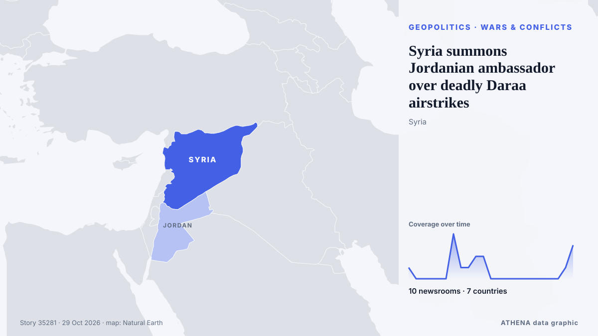

Syria summons Jordanian ambassador over deadly Daraa airstrikes

Syria has lodged a formal protest over Jordanian airstrikes that killed seven civilians, despite an agreement to investigate the incident. von The New Arab
Unabhängig gemeldet von 9 Medien in 7 Ländern seit dem 26. Okt., zuerst von Al Jazeera English; die Berichterstattung ist abgeklungen. ATHENA stuft das Risiko als erhöht ein (5.2/10), vor allem wegen der Schwere des beschriebenen Schadens und der Qualität der Belege. Die Konfidenz liegt bei 92 % (hoch): 9 Medien bestätigen es unabhängig, bei einer mittleren Verlässlichkeit der Quellen von 82 %. Medien nach Land: Türkei (3), Katar (2), Saudi-Arabien (2). Berichterstattung: 26. Okt. bis 28. Okt., 45 Stunden.
Warum es wichtig ist: Sicherheits- und diplomatische Entwicklungen können Bündnisse, Handel und Märkte weit über die direkt beteiligten Länder hinaus verschieben.
Was sich geändert hat: 4 neue Berichte von 4 Redaktionen in den 24 Stunden bis 28. Okt..
Erste Schlagzeile: Syria Condemns Jordanian Airstrikes, Reports Civilian Casualties
Schlagzeilen werden auf Englisch angezeigt, wie veröffentlicht.
Auf einen Blick
Ausgewählt, bewertet und geschrieben nach der veröffentlichten Methodik von ATHENA. Kein Redakteur greift in einzelne Ereignisse ein. So entsteht ATHENA ›
| 26 Oct 20:41 UTC | 1 |
|---|---|
| 26 Oct 22:41 UTC | 0 |
| 27 Oct 00:41 UTC | 0 |
| 27 Oct 02:41 UTC | 0 |
| 27 Oct 04:41 UTC | 0 |
| 27 Oct 06:41 UTC | 0 |
| 27 Oct 08:41 UTC | 4 |
| 27 Oct 10:41 UTC | 1 |
| 27 Oct 12:41 UTC | 1 |
| 27 Oct 14:41 UTC | 2 |
| 27 Oct 16:41 UTC | 2 |
| 27 Oct 18:41 UTC | 0 |
| 27 Oct 20:41 UTC | 0 |
| 27 Oct 22:41 UTC | 0 |
| 28 Oct 00:41 UTC | 0 |
| 28 Oct 02:41 UTC | 0 |
| 28 Oct 04:41 UTC | 0 |
| 28 Oct 06:41 UTC | 0 |
| 28 Oct 08:41 UTC | 0 |
| 28 Oct 10:41 UTC | 0 |
| 28 Oct 12:41 UTC | 0 |
| 28 Oct 14:41 UTC | 1 |
| 28 Oct 16:41 UTC | 3 |
| 26 Oct 20:56 UTC | 3.0 |
|---|---|
| 27 Oct 10:23 UTC | 5.9 |
| 27 Oct 14:48 UTC | 6.0 |
| 28 Oct 16:49 UTC | 5.5 |
| 28 Oct 18:10 UTC | 5.2 |
Warum diese Zahlen
Bedeutung
Risiko
Konfidenz
Die Berichterstattung – wer berichtete, und wann
Schlagzeile wie veröffentlicht · öffnet das Original- Al Jazeera English · KatarHuge explosion at a weapons depot in Syria
- Arab News · Saudi-ArabienJordan says it killed more than 20 Daesh militants in airstrikes on Syria
- Anadolu Agency (English) · TürkeiJordan says strikes in Syria killed over 20 ISIS members as Damascus condemns attacks
- Kurdistan24 (English) · IrakSyria Condemns Jordanian Airstrikes, Reports Civilian Casualties
- DW English · DeutschlandJordan acknowledges civilian casualties in Syria airstrike against 'Islamic State'
- Al-Monitor · Vereinigte StaatenSyria slams Jordan over crossborder strikes, denies coordination: What to know
- Euronews English · Frankreich'Unacceptable violation': Syria condemns Jordan airstrikes
- The New Arab · INTSyrians bury victims of Jordanian airstrike massacre in Daraa
- Al Jazeera English · KatarFuneral held for family killed in Jordanian airstrikes in Syria
- Anadolu Agency (English) · TürkeiUN urges protection of civilians after Jordanian airstrikes in southern Syria
- Arab News · Saudi-ArabienSyria summons Jordanian ambassador over deadly airstrikes in Daraa
- Anadolu Agency (English) · TürkeiSyria summons Jordanian ambassador for 'deadly' airstrikes in Daraa
- The New Arab · INTSyria summons Jordanian ambassador over deadly Daraa airstrikes
- Shafaq News (English) · IrakSyria summons Jordanian ambassador over strikes in Daraa